01
SIG & analyse spatiale
Structuration de données géographiques, géotraitements, analyses multicritères, production et mise à jour cartographique.
SIG · Télédétection · Cartographie · Drone
Ingénieur géomaticien spécialisé en SIG, télédétection, analyse spatiale et solutions géonumériques. Je conçois des cartes, des applications WebSIG, des bases de données spatiales et des outils d’aide à la décision pour analyser et valoriser les territoires.
À propos
Ingénieur géomaticien, je conçois et exploite des solutions SIG pour l’analyse, la cartographie et le suivi des territoires. Je développe également des sites web, des applications WebSIG et des solutions de webmapping. Mes compétences couvrent l’analyse de données, la mise en place et la gestion de bases de données spatiales, ainsi que le pilotage de drones et le traitement d’images aériennes. J’utilise la télédétection, l’analyse spatiale et la modélisation pour produire des informations géographiques fiables au service de l’aide à la décision.
Mes travaux portent notamment sur les risques d'inondation, l'occupation du sol, la surveillance environnementale, la cartographie thématique et l'appui à la décision territoriale.
Compétences
Structuration de données géographiques, géotraitements, analyses multicritères, production et mise à jour cartographique.
Traitement d'images optiques, classification, indices spectraux, suivi de l'occupation du sol et extraction d'informations.
Cartographie de susceptibilité, pondération multicritère et modèles d'apprentissage automatique appliqués aux risques.
Préparation et pilotage de missions, acquisition d’images aériennes, traitement photogrammétrique, production d’orthophotos et intégration des données dans les SIG.
Développement de sites web, d’applications cartographiques interactives et de solutions WebSIG pour la diffusion, la consultation et la valorisation des données géographiques.
Analyse, structuration et gestion de données, conception de bases de données géographiques et connexion des applications SIG à des bases spatiales.
Sélection de projets
Chaque projet présente une problématique, des données, une méthode et des résultats cartographiques issus de mes travaux.
Intégration de facteurs topographiques, hydrologiques, climatiques et anthropiques pour produire une carte de susceptibilité et évaluer la performance du modèle.
Analyse multicritère de la vulnérabilité spatiale à partir de la pente, de l'altitude, du réseau hydrographique, de la pluie et de l'occupation du sol.
Classification multi-date et quantification des changements pour suivre les transformations du couvert terrestre et les activités d'orpaillage.
Pondération floue des facteurs de risque et synthèse cartographique des classes de susceptibilité sur le territoire étudié.
Préparation de composites, calcul d'indices spectraux, classification et export de produits géospatiaux pour des analyses multi-temporelles.
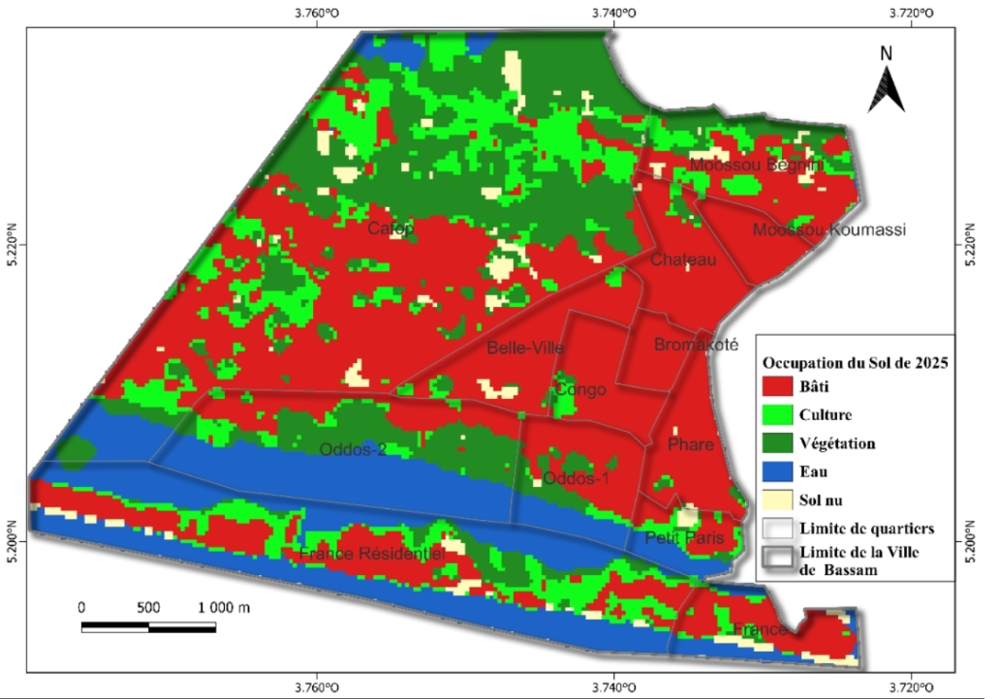
Analyse multi-temporelle des transformations du bâti, des cultures, de la végétation, des plans d’eau et des sols nus à l’échelle urbaine.
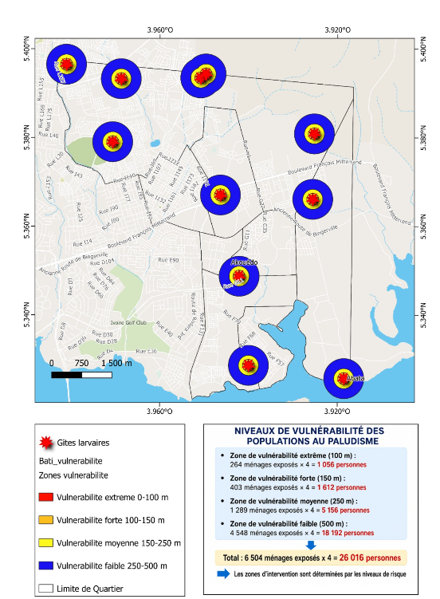
Analyse de la proximité des populations aux gîtes larvaires et hiérarchisation spatiale des niveaux de vulnérabilité afin d’orienter les zones prioritaires d’intervention.
Planification de missions, acquisition d'images et préparation de produits cartographiques pour l'observation détaillée des territoires.
Résultats cartographiques
Une sélection de cartes produites dans le cadre de la cartographie de la susceptibilité aux inondations par Random Forest.
La courbe ROC obtenue à partir de l’échantillon de test se situe nettement au-dessus de la diagonale correspondant à une classification aléatoire. L’aire sous la courbe atteint 0,919, traduisant une très bonne capacité du modèle à distinguer les zones inondées des zones non inondées à partir des facteurs explicatifs retenus.
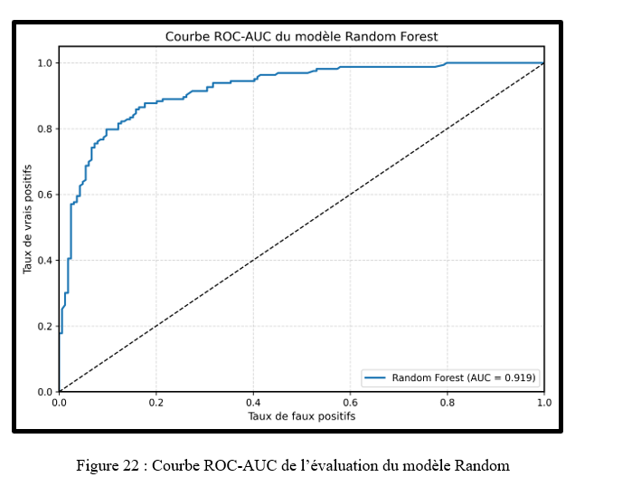
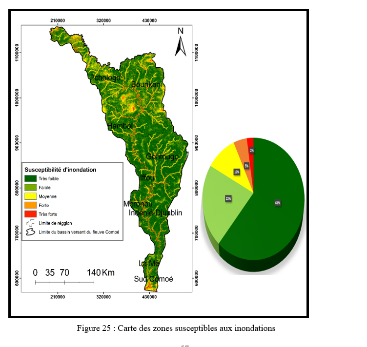
La cartographie finale distingue cinq niveaux de susceptibilité. Les classes les plus fortes apparaissent surtout dans la partie méridionale du bassin, tandis que la classe très faible domine largement l’ensemble du territoire.
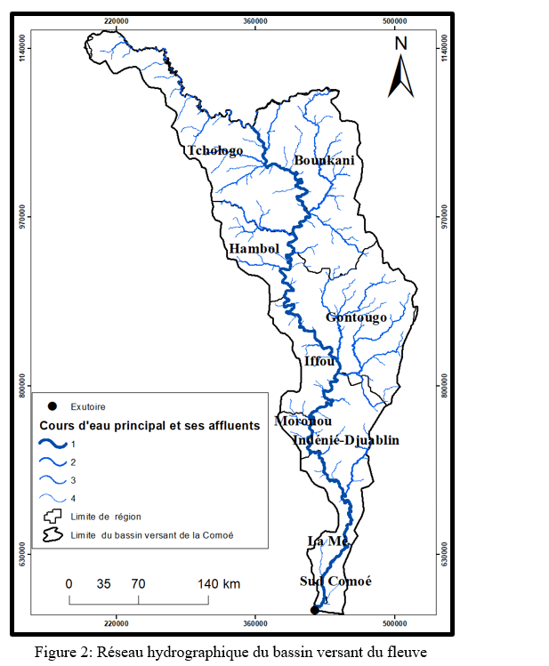
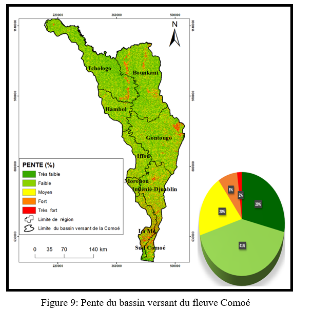
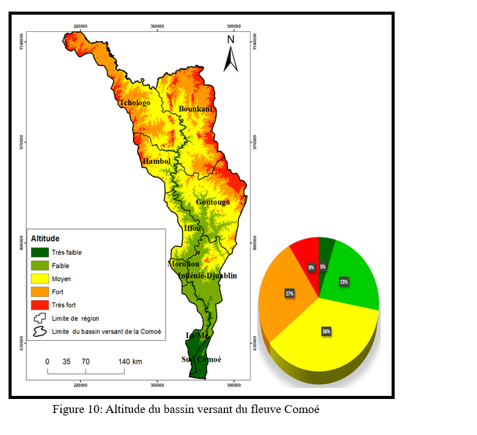
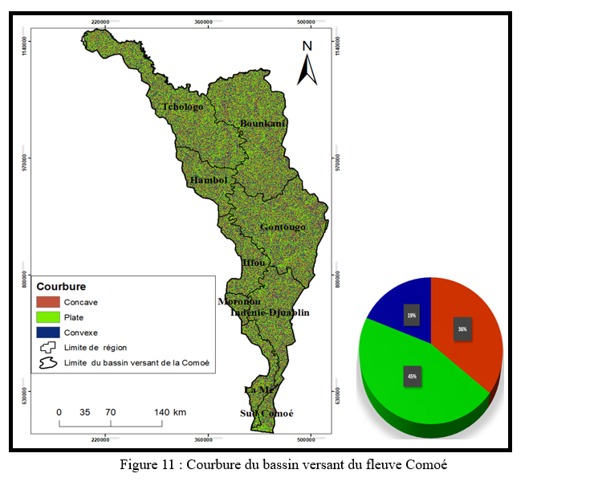
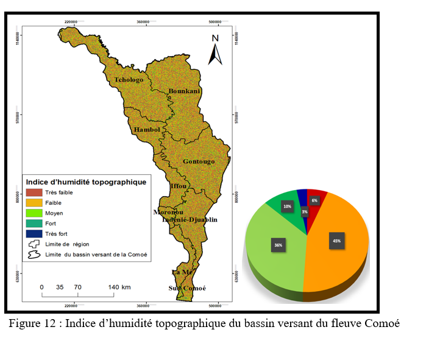
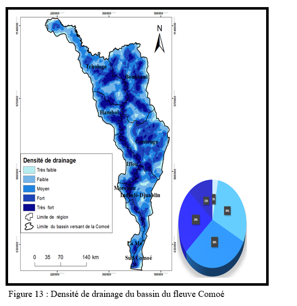
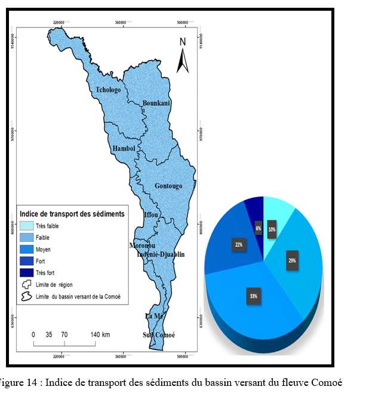
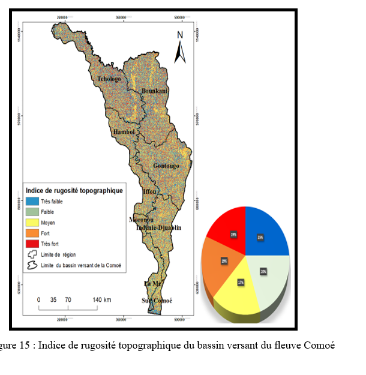
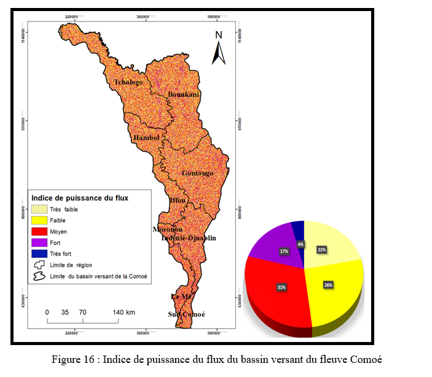
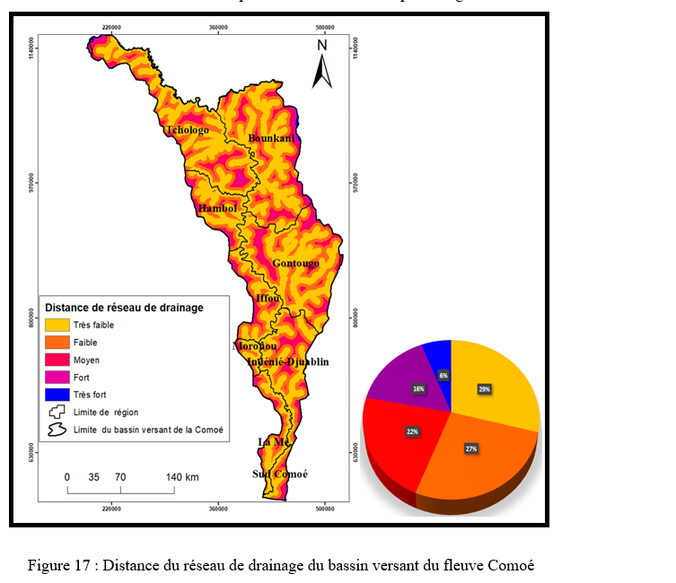
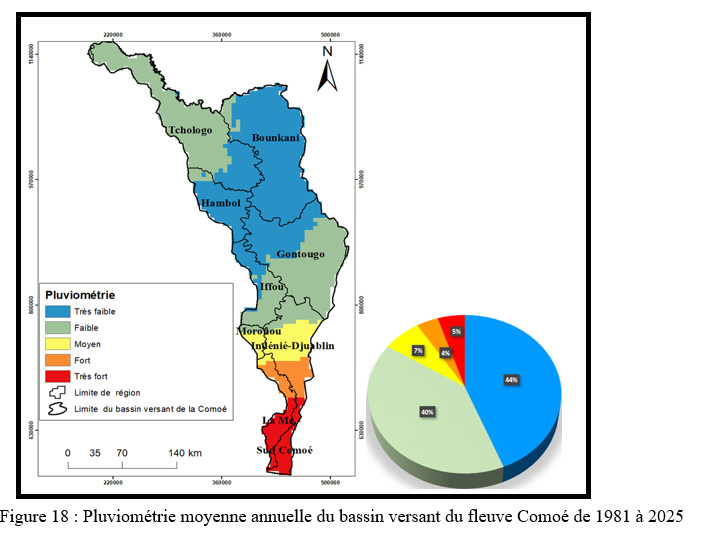
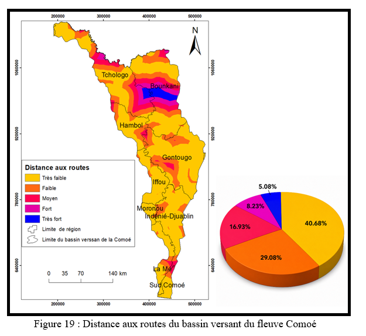
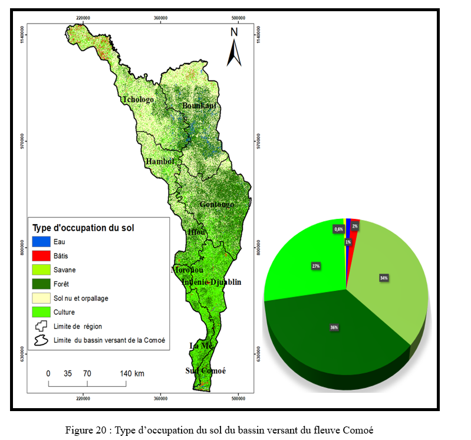

Autres réalisations
Cette série cartographique présente l’évolution spatiale de l’occupation du sol sur trois dates, en distinguant le bâti, les cultures, la végétation, l’eau et les sols nus.
Santé publique & analyse spatiale
Cette réalisation mobilise l’analyse spatiale pour représenter les gîtes larvaires, les zones de proximité et les niveaux de vulnérabilité des populations. Elle permet d’identifier les secteurs prioritaires pour les actions de prévention et de lutte antivectorielle.
Parcours
Cette section sera affinée avec les dates, établissements, fonctions et certifications de ton CV définitif.
Université Alassane Ouattara de Bouaké, Côte d’Ivoire.
Centre universitaire de recherche et d'application en télédétection et SIG. Formation spécialisée en systèmes d'information géographique, télédétection, cartographie, analyse spatiale et modélisation environnementale.
Préparation et conduite de missions d'acquisition au service de la cartographie et de l'observation territoriale.
Contact
Je suis disponible pour des opportunités professionnelles, missions, collaborations techniques et projets de recherche.